ERN Processing
Successful claims management requires a secure and reliable system to ensure your patients’ claims are processed quickly and correctly. Simply download and apply remittance amounts for rapid reimbursement. Specialized claims transmission technology assists in properly coding claims in accordance with Medicare and other third-party payer regulations. Contact TIMS Support at 800-763-0308, for details and assistance in setting up your practice to process ERNs (Electronic Remittance Notice). (fees applicable)
Processing ERNs
- Click on the Process button in the ERNs section.

This brings up the ERN Process Screen.

- Under Download ERN Data 835 Transactions, click on the Download button. This will connect to the clearinghouse and download a file of ERNs that contains many batches of claims from many Payers. Each of these batches contains many claim ERNs that are headed by a Check/ACH/NON number that was sent to the Bank or Practice. The name of the Batch will be placed in the Combo-Box under Process Downloaded ERN 835 Data Files.
- Click on the Process Selected Batch button.
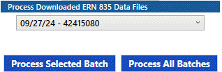
If you wish to process ALL the available ERN batches, click the Process All Batches button.
This will break up the file into many groups headed by a Check header and Number. The batches are listed in the Combo-Box below the Process ERN Transactions header. This Combo-Box is sorted by Payer and Date and contains three type of batches. The Combo-Box could contain batches from previous downloads that have not yet been processed. The three type of batches are:
- RED – Payment Assignments Required. These claim ERNs have a problem of some type that will not allow the individual transactions to be tagged to a claim line.
- BLUE – Payment Assignments Completed. These are ERN transactions that have been tagged to a claim line and are ready to the posted (see next section).
- BLACK – ERN Posting Complete. These are batches of ERNS that have been posted to claims. Click on the Clear All Completes button
 to remove the listings. The transactions are not deleted but are just set to a completed state.
to remove the listings. The transactions are not deleted but are just set to a completed state.
- Click the drop down list, and a list of all the batches will display. These will be Red, Blue, and Black. The Black lines have been completed and if you want to remove that line, just click on it and you will asked to remove it from the list.

The Blue lines are ready to be posted and do not require any action in this stage of processing.
- When you Click on a batch (Red or Blue), the Exception Window will appear with the Check Number, Date, and Payer in the title and a detail list of the individual claims with their detailed lines of Charges and Payments. The Exception Window displays the ERN Transactions that have been downloaded from the Payer through the Clearinghouse. The color of each line indicates the condition of the line. The colors are described in the lower left side of the Window. The total check amount in the title may not equal the total of the claims because some the claims have already been posted. The buttons are as follows.

- Easy Print - This creates a file on the local PC that can be displayed in the Easy Print program from CMS.
- Void All - This will void all transactions in the entire batch of ERN transactions.
- POS Posting - Shows a list of ERN payments to be created as POS payments.
- Close - Exit from the Exception window.
- Clicking on an individual line will bring up an expanded view of the line with all its values.

There are two parameters that can be used to enhance the process. The Patient Lookup Method can be used to speed up the process by only including the single patient in the TIMS Name drop down field. This is the normal way to display the information. The Transaction Lookup Method is used to either show all the TIMS transactions in the claim or just the TIMS transactions that have not been assigned to the claim. The normal way is to just display the unapplied TIMS transactions.
- The right hand side of the Exception Window can be used to show the history of the claims that belong to the selected patient.

This screen is useful when researching a patients claim history especially when claims have been resubmitted to the payer. The screen can be populated by clicking on the patient name on the left side screen.
Examples
- The following screen shows the situation where a claim was resubmitted.

- The tooltip on the red box tells you the resubmitted claim number.

- Click on each line to display the Processing ERN details.


- From here you can select the correct new claim number.
- The corrected line looks like this.

- In the following screen, three claims are represented.

- The second claim (6430) and lines represents a claim that has been denied by the payer by the symbol “Dnl”. The amount billed was $50.00 and the amount paid was $0.00. The third claim (6292) was paid a total of $55.86 by the primary payer. Both of these claims will be posted in the next phase of the processing.
- Another example are claims displayed in Red.

- The error is caused because the sequence number of the claim line is wrong or zero.
- The sequence number can be changed by looking up the actual claim line item in TIMS. Click on the claim line item and the following window will appear:

- Click on the ERN Claim Number to show the selection of all the line items.
- Select the claim line item that matches the error claim line item.
- Click OK and the claim line item will be updated.
- The following screen shows the case where a patient claim has a payer payment that has been reduced and is not applied to a given line but to the overall claim. The Gold amount in the Payment Column shows the actual payment amount from the payer. The Gold amount in the adjacent column is the amount that has been applied to the claim lines.

- Click on the Gold amount and this window will popup

It will allow you to balance the claim completely and also insert the PR, PI, or OA amounts. The gold amount will turn to blue, the payment amount will be adjusted, and the claim will be posted on the next phase of the processing.

- Another situation is called “Payer Charge”. This is when the payer decides to change the total batch payment amount without identifying any particular claim. There are many reasons for this to occur, but the two most used are Interest on Payments (L6) and Overpayment Recovery (WO). The L6 case is usually in the pennies but the WO can be in the hundreds of dollars.
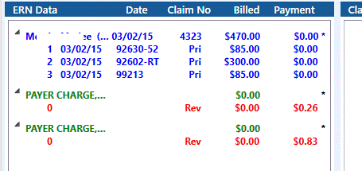
- The case above is L6. The reason for this is that the Payer decides to give the Practice some money for interest on Claim Payments because they were slow in processing. The method to process the case is to Single Click on the “Payer Charge” word. This will bring up this display.
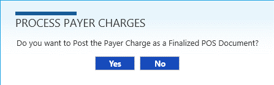
- Click Yes to this and the payment and reason for the payment will be posted to a Finalized POS Invoice or Credit Memo with a Patient Name of “PAYER CHARGE, INSURANCE”. The net amount of the Invoice or Credit Memo will equal zero. The information of the POS document will indicate the reason for the payment and the check number of the payment. This POS document will be synced to QuickBooks as a payment and a charge.
- The “Payer Charge” will then be removed from the screen. Perform this overall process for all Payer Charges in the batch. The POS Invoice that is created will look like this.
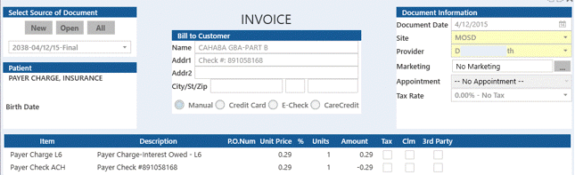
- An uncommon situation is when a payer sends a payment for a claim that was processed, but has been eliminated for some reason. There may be an insufficient balance on the claim to apply it to, but the practice has received the payment and it must be accounted for. This process will convert the ERN claim payment to a POS payment, where it can be applied elsewhere.
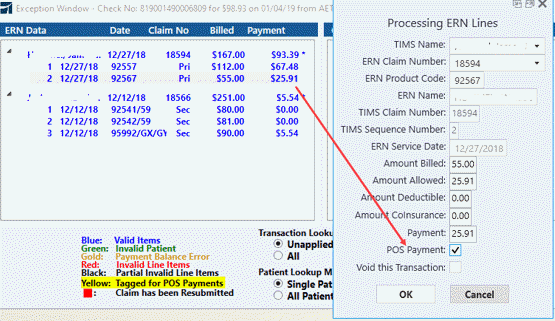
- Double-click on the payment line to bring up the Processing ERN Lines screen. Check the POS Payment box. Click OK.
- The payment line will turn yellow.
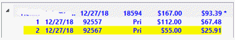
- Repeat with any other payment lines that need to be converted to POS payments. When all have been entered, click the POS Posting button
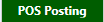
. - The ERN Payer Charge/POS Payments screen will popup.
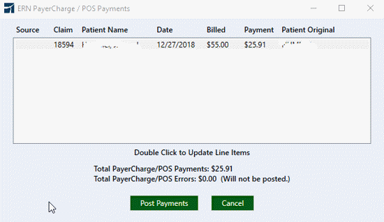
- Click the Post Payments button
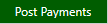
. - A POS Payment will be created for the amount of the ERN payment, and the ERN payment line will be removed.
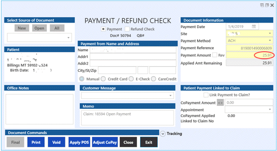
Print the ERN Information
If needed, the ERN file received from the clearinghouse can be downloaded to your computer and printed using the CMS EasyPrint software.
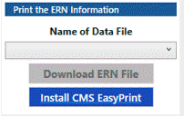
- Select the data file from the drop down list. Files will be identified by date, file number, check amount and check number.
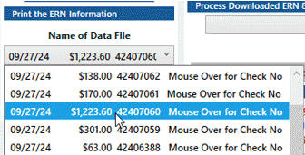
- Click the Download ERN File button.
- A confirmation message will popup. Click OK.
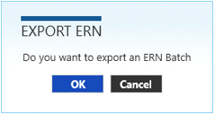
- Browse to the location on your computer where you wish to save the file. Click Save.
- Another message will confirm the location of the saved file. Click OK.
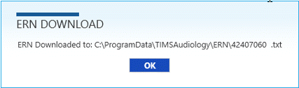
- The file can then be viewed and printed using CMS EasyPrint software. If you need to install a copy of the software, click the Install CMS EasyPrint button to be directed to the CMS website. From there you can download the software and instructions.